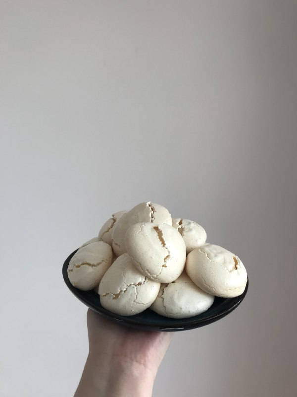
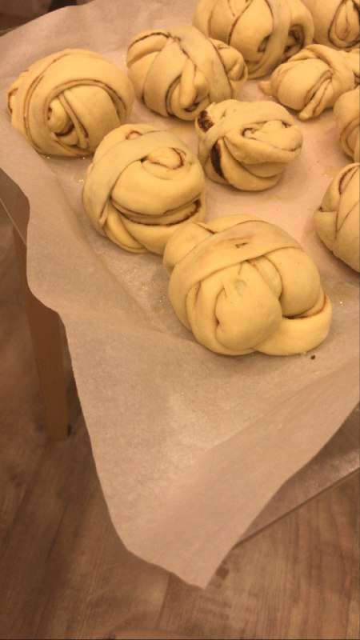

The is a small collection of sweet bakery. My wife enjoyes cooking these recipes :)
Meringue

These meringues turned out amazing. I never knew you can cook those at home. Ingredients are very simple:
Instuctions:
- Add salt to egg whites and make them fluffy.
- Add sugare.
- Bake in the oven on 100°C for 90 minutes. Bon appetit!
Cinnamon buns

My wife and I started cooking these buns after our trip to Sweden in 2020. We really loved them and they bring as a lot of happy memories.
- Yeast
- Milk
- Butter
- Sugar
- Flour
- Vanilla
- Cinnamon
Instructions:
- Mix all ingredients to make a dough.
- Set it aside for an hour.
- Make it flat.
- Cut long stripes and form the buns.
- Bake in the oven on 200°C for 25-30 minutes. Do not forget about baking paper! Bon appetit!